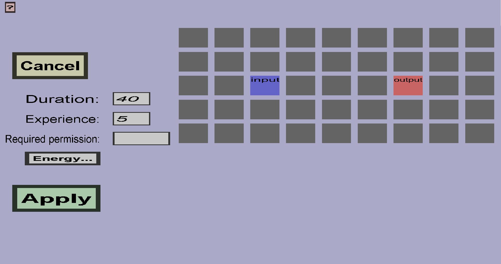

The container recipe edit menu can be used to create or modify recipes of a given custom container. A container recipe has inputs and outputs. The inputs determine which items need to be present in which input slots of the container. The outputs determine which items will appear in which output slots.
The process is similar to that of a furnace: if there is a valid combination of input items and there is fuel (or the container is still burning), it will start converting the inputs to outputs. After a couple of seconds, the input items will vanish and the output items will appear. (If the input items weren't taken away and the furnace didn't stop burning in the meantime.) For container recipes, you can also choose how long this takes and how much xp is granted. (But the xp works a little differently because there can be more than 1 output).
If you use manual output slots rather than regular output slots, the process will instead be similar to that of a crafting table: if there is a valid combination of input items, the output item will immediately appear in the manual output slot, and the input items will be consumed when the player takes the result from the manual output slot.
If you just started creating a new recipe for a custom container with a single input slot and a single output slot, it should look like this:
Finally, there is a version of the containers slot grid that occupies most of the space. For container recipes, only the input slots and output slots are interesting. The input slots will be marked blue, the output slots will be marked red, the manual output slots will be marked dark red, and the rest will be gray. The name of all the slots are shown as well.
By clicking on any of the input slots, you can choose which ingredient this recipe needs to be in that slot, using the choose ingredient menu. If you leave an input slot empty (or reset it to empty), this recipe will ignore that input slot. If you would leave all input slots empty, the container would produce the output continuously until it runs out of fuel or the output slot is full.
By clicking on any of the output slots, you can choose which results this recipe may put in that slot, using the output table menu. If you leave an output slot empty, the recipe will ignore that output slot. If you would leave all output slots emtpy, the container would basically consume the input and only produce xp.
By clicking on any of the manual output slots, you can choose which result will be put in that slot. Unlike regular output slots, manual output slots can only have 1 result. Also, every recipe can have at most 1 manual output slot.
Right-clicking any input or (manual) output slot will remove the corresponding ingredient or result from this recipe.
You can copy an ingredient by pressing the 'c' button while hovering over an ingredient and paste an ingredient by pressing the 'p' button while hovering over the destination slot. Similarly, you can copy results.
If you rename or remove any input or output slots used by this recipe, it will get missing slots. As long as any recipes have missing slots, the custom container can't be created and the changes can't be applied. If the recipe you're currently editing has any missing slots, they will be shown below the grid. To fix that, you can either add a new slot with the name of the missing slot, or click on the X on the right of the missing slot name to remove the ingredient or result corresponding to that slot.